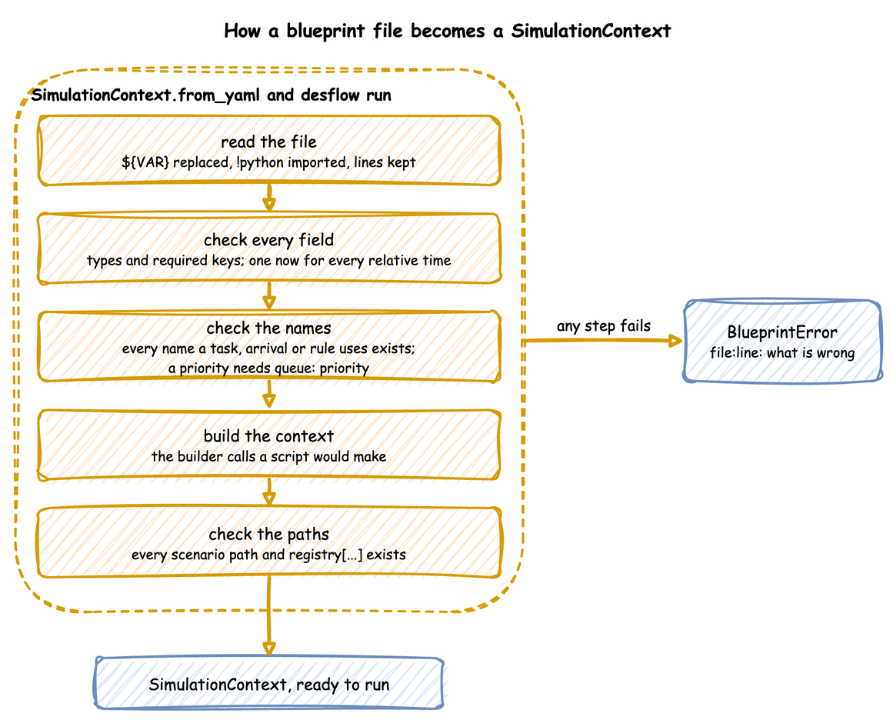

YAML Blueprints
A YAML blueprint is a simulation written as a file. This page shows how to run one, how a file is read and checked, how to change settings per environment, and where an error points. YAML Format lists every key a blueprint accepts.
What It Is
A blueprint is the builder calls of a Python script, written as data. Each section becomes the builder call of the same name: resources is add_resource, tasks is @app.task, stats is with_stats, and so on. There is no second way of building: SimulationContext.from_yaml makes those calls, in the order a script would, and returns an ordinary SimulationContext. A blueprint and a script that make the same calls produce the same simulation, and the tests check that the YAML, builder and low-level versions of every example publish the same records.
Logic that a file cannot express is Python, which a blueprint references with !python, as Python in a Blueprint shows.
How to Use It
Run a Blueprint
From a shell, with the desflow command that the package installs. These lines use the local example:
desflow examples get local --api yaml # downloads local/yaml/local.yaml
cd local/yaml
desflow run local.yaml # runs until run.until
desflow run local.yaml --until 10min # overrides run.until
desflow run local.yaml --seed 7 # overrides simulation.random_seed
desflow examples # lists the other examples
desflow --version
--until takes seconds or a duration such as 10 min, 2 hours or 1 week. The command logs at INFO level, so ConsoleEgress output is visible. A run with no seed logs the seed it drew, with the command that repeats it. An invalid file prints its errors and exits with code 1.
From Python:
from desflow import SimulationContext
app = SimulationContext.from_yaml("local.yaml")
app.run() # calls run.before, then runs until run.until
run() calls the blueprint's run.before functions first, and uses run.until when no until is passed. The builder methods and decorators still work on the context from_yaml returns.
Times and Durations
A time in a blueprint is a number of seconds or a duration such as 90 s, 10 min, 2 hours or 1 week: run.until, a scenario step's at, simulation.warmup, a stats interval, and every time-valued distribution parameter. rate is the exception: it is a number per second.
logical_start_time and go_live_at are instants: now, a signed duration from now such as -1d or -10m, or an ISO datetime such as 2026-01-01T00:00:00. Both are read against one moment, when the file is loaded, so -10m and now are exactly ten minutes apart. now and the relative forms have no time zone; go_live_at and logical_start_time must both have a time zone or both have none.
Settings per Environment
${VAR} in a value is replaced with the environment variable, so one file can serve several environments. ${VAR:-default} uses the default when the variable is unset or empty, as in a shell, and $${ writes a literal ${. An unquoted value is read as YAML reads it after the replacement, so factor: ${SIM_FACTOR:-0} is the number 0; a quoted value stays a string. A variable without a default that is unset stops the load with its line.
# Settings that change per environment, read from environment variables.
# Run it with: SIM_FACTOR=1 desflow run environment.yaml
simulation:
sim_id: ${SIM_ID:-Shop}
# An unquoted value is read after the replacement, so this is the number 0
factor: ${SIM_FACTOR:-0}
# Read against the moment the file is loaded: a day of history up to now
logical_start_time: -1d
egress:
- type: Console
resources:
# Quoted, because ${...} inside {...} would end the mapping early; the check
# turns the text into a number
packers: {current_cap: "${PACKERS:-2}", max_cap: 5}
run:
until: ${RUN_FOR:-1 hour}
The Parquet example switches from the local disk to S3 with five variables, and Queues and Capacity runs one file with several numbers of packers.
What It Does for You
from_yaml makes the builder calls for you, so a blueprint gets everything the builder does, and it checks the whole file before anything runs. A file is read and checked in five steps, and any step that fails stops the load with a BlueprintError before anything runs:

- Read the file.
read_documentreads it with a subclass ofyaml.SafeLoader.${VAR}is replaced while each scalar is read,!python module.attributeimports the module and returns the attribute, and every key's line is kept in a source map. Every other node is built asyaml.safe_loadwould build it. - Check every field. The document is validated against the
Blueprintmodel. Unknown keys are refused, so a misspelt key is reported rather than ignored, and every distribution is built as the builder would build it, so a parameter out of range or one the family does not take is refused here. Every relative time is read against onenow. All validation errors are reported at once. - Check the names. Every service, resource, store, container and next task a task names exists; every
spawnnames a task; everylevel.<name>in an expression names a store or container; a store and a container do not share a name; a task'spriorityneeds a resource withqueue: priority; resources and stores have whole-number capacities. - Build the context. The builder calls are made in the order a script would make them: the simulation, ingress, egress, batching, stats, resources, stores, containers, variables, services, arrivals, tasks, arrival loops, processes, telemetry and the scenario.
- Check the paths. The parameters are registered into a scratch registry with the code the run uses, so every scenario
pathand everyregistry["..."]an expression reads is checked against the paths the run will have, and every scenariovaluemust convert to the type its path holds.
Errors and Limits
An error at any step is mapped back to its line through the source map:
# A blueprint with a mistake, for the YAML Blueprints page: pack_order has a priority,
# but its resource serves its queue in the default order, fifo.
simulation:
sim_id: Shop
factor: 0
resources:
packers: {current_cap: 1, max_cap: 2}
services:
packing: {dist: constant, value: 1.5 s}
arrivals:
orders: {dist: exponential, rate: 0.5, spawn: pack_order}
tasks:
pack_order:
service: packing
resource: packers
priority: 0
payload: {event_type: order_packed}
try:
SimulationContext.from_yaml("blueprint_error.yaml")
except BlueprintError as error:
print(f"Error: {error}") # what desflow run prints, before exiting with code 1
Error: blueprint_error.yaml:20: task 'pack_order' has a priority, but resource 'packers' does not set queue: priority
A blueprint covers configuration. These stay in Python:
- Values computed per entity. A mapping payload is a constant, apart from the task id that
id_fieldadds and the attributes thatattributesadds. Random choices, derived fields and state carried between events are a Python payload or process, as Python in a Blueprint shows. A task'spriorityand agetorputamount can be an expression, andnextrules read attributes, payload fields, levels and registry values, as Task Flow describes. - Entity keys. A blueprint uses the default key,
<arrival>-<n>; a key function is builder only. - More than one resource per task, preemption, batching. These are processes in Python.
- One simulation per file. A blueprint has one
sim_id, and there is no include of another file.
A file with no !python references is read entirely by yaml.SafeLoader, and loading it imports only the connector modules its type entries name. A file that references Python runs the imports it names, so it is as trusted as a Python script; YAML Format explains.